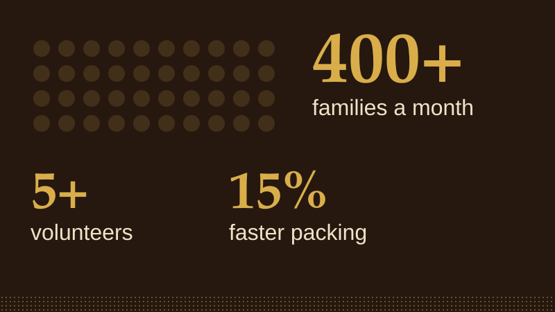

Food bank coordinator
I lead the volunteers who pack food for 400+ families a month.

The problem
The IAA and IACC food bank serves 400+ families a month. Packing that much food takes volunteers who know their job and a line that keeps moving.
I started as a volunteer in June 2022 and became the coordinator. The job is to keep the people and the process in good shape every month.
What I did
I schedule and lead 5+ volunteers. I looked at how the packing line worked and redesigned the workflow, which made packing 15% faster.
The same volunteers now move more food in the same time, so more of each shift goes to families and less to waiting.
- 400+families served a month
- 5+volunteers I lead
- 15%faster packing
How it works
Three stages, from a volunteer shift to a family’s table.
- 5+
Volunteers
I schedule and lead the people who pack.
- 15%
The packing line
The workflow I redesigned. It is 15% faster.
- 400+
Families a month
Food goes to 400+ families every month.
Results
Packing is 15% faster, with the same volunteers, for 400+ families a month.
- 400+families a month
- 5+volunteers I lead
- 15%faster packing
What I owned
- Lead 5+ volunteers serving 400+ families a month.
- Redesigned the packing workflow and made packing 15% faster.
What I learned
- A change to the process can be worth as much as extra hands. A faster line helps every shift, not just one.
- Volunteers stay when the job is clear. Scheduling and a simple, repeatable line matter as much as enthusiasm.